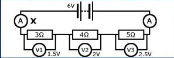
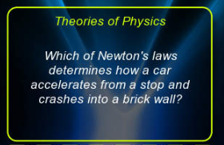
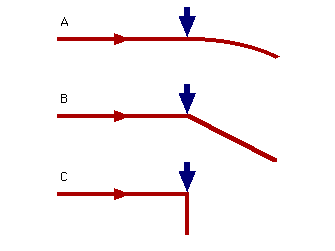
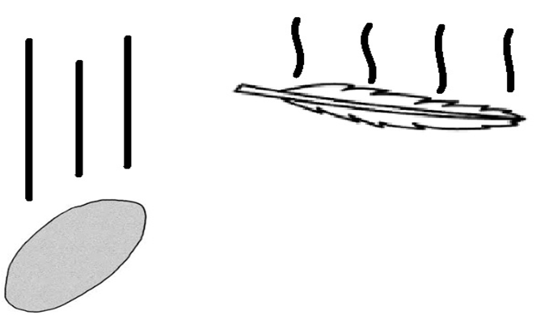

<!--
  Generated template for the PhysicsPage page.

  See http://ionicframework.com/docs/components/#navigation for more info on
  Ionic pages and navigation.
-->


<ion-content padding>
  <ion-slides>


  <ion-slide>
      <h3>Question 1</h3>
          <div class="flash-card-front"></div>
      <h3>What is the value of each resistor?</h3>

      <ion-list no-lines radio-group [(ngModel)]="Quetion1" >
          <ion-item>
              <ion-label>1.Each resistor has a value of 6 Ohms </ion-label>
              <ion-radio value="1" (click)="goToSlide1()"></ion-radio>
          </ion-item>
          <ion-item>
              <ion-label>2.Each Resistor has a different value.</ion-label>
              <ion-radio value="2"  (click)="goToSlide1()"></ion-radio>
          </ion-item>
          <ion-item>
              <ion-label>3. Each reistor has an average value of 4 Ohms</ion-label>
              <ion-radio value="3" (click)="goToSlide1()"></ion-radio>
          </ion-item>
          <ion-item>
                  <ion-label>4. The are no values at each resistor.</ion-label>
                  <ion-radio value="4" (click)="goToSlide1()"></ion-radio>
              </ion-item>
      </ion-list>
  </ion-slide>


  
  <ion-slide>

      <h3>Question 2</h3>
          <div class="flash-card-front"></div> 
      <h3>What is a unit of a resistor? </h3>
      <ion-list no-lines radio-group [(ngModel)]="Quetion2" >
          <ion-item>
              <ion-label>1.Ohms</ion-label>
              <ion-radio value="1" (click)="goToSlide2()"></ion-radio>
          </ion-item>
          <ion-item>
              <ion-label>2. Tesla </ion-label>
              <ion-radio  value="2"  (click)="goToSlide2()"></ion-radio>
          </ion-item>
          <ion-item>
              <ion-label>3.Joule</ion-label>
              <ion-radio  value="3"  (click)="goToSlide2()"></ion-radio>
          </ion-item>
          <ion-item>
                  <ion-label>4. Force </ion-label>
                  <ion-radio value="4"  (click)="goToSlide2()"></ion-radio>
              </ion-item>
      </ion-list>

  </ion-slide>


  <ion-slide>
      <h3>Question 3</h3>            
          <div class="flash-card-front"></div>
      <h3>Which of Newtons laws determines
           how a car accelerates from a stop and crashes into a brick wall  ?</h3>
      <ion-list no-lines radio-group [(ngModel)]="Quetion3" >
          <ion-item>
              <ion-label>1. All of the laws</ion-label>
              <ion-radio  value="1"  (click)="goToSlide3()"></ion-radio>
          </ion-item>
          <ion-item>
              <ion-label>2.third law </ion-label>
              <ion-radio  value="2"  (click)="goToSlide3()"></ion-radio>
          </ion-item>
          <ion-item>
              <ion-label>3.second law</ion-label>
              <ion-radio  value="3"  (click)="goToSlide3()"></ion-radio>
          </ion-item>
          <ion-item>
                  <ion-label>4.first law</ion-label>
                  <ion-radio  value="4"  (click)="goToSlide3()"></ion-radio>
              </ion-item>
      </ion-list>
  </ion-slide>


  <ion-slide>
      <h3>Question 4 </h3>
          <div class="flash-card-front"></div>
      <h3> Which path does the puck follow ?</h3>
      <ion-list no-lines radio-group [(ngModel)]="Quetion4">
          <ion-item>
              <ion-label>1.A</ion-label>
              <ion-radio  value="1"  (click)="goToSlide4()"></ion-radio>
          </ion-item>
          <ion-item>
              <ion-label>2.B</ion-label>
              <ion-radio  value="2"  (click)="goToSlide4()"></ion-radio>
          </ion-item>
          <ion-item>
              <ion-label>3. C</ion-label>
              <ion-radio  value="3"  (click)="goToSlide4()"></ion-radio>
          </ion-item>
          <ion-item>
                  <ion-label>4. None of th Above </ion-label>
                  <ion-radio  value="4"  (click)="goToSlide4()"></ion-radio>
              </ion-item> 
      </ion-list>
  </ion-slide>


  <ion-slide>
      <h3>Question 5</h3>
          <div class="flash-card-front"></div>
      <h3>Acceleration due to gravity of the earth is approximately?</h3>
      <ion-list no-lines radio-group [(ngModel)]="Quetion5">
          <ion-item>
              <ion-label>1.9,81 m/s</ion-label>
              <ion-radio   value="1" ></ion-radio>
          </ion-item>
          <ion-item>
              <ion-label>2. 8.81 m/s </ion-label>
              <ion-radio  value="2" ></ion-radio>
          </ion-item>
          <ion-item>
              <ion-label>3. 9.21 m/s </ion-label>
              <ion-radio  value="3"></ion-radio>
          </ion-item>
          <ion-item>
                  <ion-label>4. 8.91 m/s </ion-label>
                  <ion-radio  value="4"  ></ion-radio>
              </ion-item>
      </ion-list>
              
      <button ion-button block outline color="light" (click)="Next()"   >Next Level

        </button>

  </ion-slide>


  
   


</ion-slides>


</ion-content>
